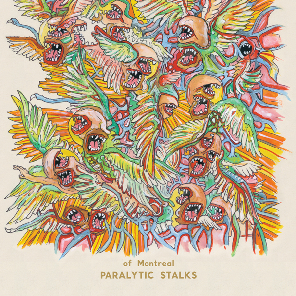

Paralytic Stalks (2012)
The tenth album out of the fourteen that of Montreal has produced drifts away from the well-known poppy vibe surrounding the band. The lyrics do not stray; they still posses the emotional rawness of Barnes' inner mind. The songs within themselves are very dynamic and contain various switches of sounds throughout. The album possesses a wide array of music styles. Barnes collaborated with artist Kishi Bashi in the production Paralytic Stalks.
Track Listing
- Gelid Ascent - 4:17
- Spiteful Intervention - 3:40
- Dour Percentage - 4:39
- We Will Commit Wolf Murder - 5:41
- Malefic Dowery - 2:36
- Ye, Renew the Plaintiff - 8:45
- Wintered Debts - 7:33
- Exorcismic Breeding Knife - 7:41
- Authentic Pyrrhic Remission - 13:13
Featured Track
We Will Commit Wolf Murder
This song demonstrates the type of emotional rawness that this album possesses. Barnes is lost and has little to no one to trust in and rely on. He is having internal conflicts with his feelings about his wife, Nina.
Lyrics
Something's terrorized my psyche to get even
Lately you're the only human I believe in
I tried to understand his logic
But there's just no pattern there
No sympathetic voices anywhere
There's blood in my hair
Now I'm considered ugly from every angle
You're the only beauty I don't want to strangle
Can't you hear me crying out for guidance?
Yes, we hear but we don't care
There's no sympathetic victims anywhere
There's blood in my hair
I want to get all fucked up and tell you how I really feel
Because your vibrant blackness coco artery is so unreal
When I die I want you to die too
Not try to stay in this all
In a dimension without you, spit on this planet without you
I envy you because you can believe in things like I never could
And like, dose yourself into a coma over the bestiality of our race
All I meant how to send into some ancient reptilian form like an agnostic transsensiation
Don't know what that is (use your imagination)
They paralyze my psyche to get even
Lately you're the only dancer I believe in
I would put your dower's blood in my hair
No sympathetic voices anywhere
There's blood in my hair
Anti human armies spring from every angle
You're the only soldier I don't want to strangle
I can see this intolerance fate
So don't expect us to cooperate
Anyway, it's five lives too late
And there's blood in my hair
Harbors
Our most obliging harbor
For this illusion movies
I wish I'd be stung by
Tears of confusion
Will you
meet the common end to
your odd shaped mission?
Though it isn't true
I don't believe in that kind of plot
But still I pray for you
We will produce verity holocausts
We will commit acts of misery
We will weaponize silence in a sense
And we'll forget
Someone's terrorized my psyche to get even
Lately you're the only human I believe in
I suffer from this death to find a kingdom raised
Terror corpses in the vapor, martyr's wrapped in butcher paper
In the fall a monster possessed your mind
You're the only dancer I don't want to strangle
Can't you hear me crying out for guidance?
Yes, we hear but we don't care
There's no sympathetic voices anywhere
There's blood in my hair
I saw you laughing, but tomorrow you'll say you were there
You looked at me in disgust. Girl, why should I care?
There's blood in my hair
There's blood in my hair
There's blood in my hair
Blood in my hair
Fuck